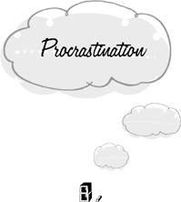

{% include JB/setup %}
{% raw %}
<div>

<h1 id="filepos134257" class="calibre19"><span class="calibre20"><span class="bold"><a class="calibre21"></a><a class="calibre21"></a></span></span></h1><div class="calibre16"> </div>
<p class="calibre22">                 <a class="calibre23"></a><a class="calibre23"></a>t often happens that, having unequivocally decided to do something, we nevertheless experience a great deal of difficulty in getting started. The mind simply refuses to get down to business. In preparation for writing a letter, we order up all the papers on our desk. Then we order up all the papers <em class="calibre9">in</em> the desk, straighten a picture on the wall, do some calisthenics … In short we seek out any small occupation that can take the place of turning to our appointed task. This is the mental trap of <em class="calibre9">procrastination.</em> We may or may not get the upper hand over our procrastinative tendency. But even when we do, it takes the usual trap’s toll of squandered time and energy.</p>
<p class="calibre22">Some of our procrastinations last for only a moment. Having already decided to run into a burning house and save a child, we still hesitate before entering the flames. Except in the most extraordinary circumstances, these brief fits of procrastination have little effect on the course of our life. But we also procrastinate for days, <a class="calibre23"></a>months, and years at a time. Conditions never seem quite right for the initiation of our project. We can’t start to diet this week because we’re going to have visitors who must be wined and dined. Next week, we’re invited to a wedding feast. The week after, we’re overwhelmed with work and feel the need to be easy on ourselves in other ways. We can’t find any obstacles the week after that; but we decide to indulge for just a little longer. After all, it won’t make any difference in the long run whether we begin to diet today or seven days from now. Seven days later, we’re invited to another feast … Now, whether to diet is our own affair. We can choose to be as fat as we like. But <em class="calibre9">if</em> we’ve decided to lose weight, we are trapped in a monumental procrastination.</p>
<p class="calibre22">Formally, procrastination is a minor variation on the theme of resistance. In both traps, we hold back from an undertaking whose time has come. The difference lies in our intention toward the new task. When we resist, we don’t recognize or accede to the legitimate demands of a new call to action. The emergency, opportunity, or interruption is imposed on us from the outside, and we refuse to place it on our agenda. But when we procrastinate, the call to action is our own. <a class="calibre23"></a>We <em class="calibre9">want</em> to write the letter. We’ve already decided that we <em class="calibre9">will</em> write it. And still we hold back.</p>
<p class="calibre22">Another difference between resistance and procrastination is that the former finds us already occupied with a previous activity that we’re reluctant to abandon in midstream. When we procrastinate, however, we don’t appear to be busy with anything else. On the contrary, we may go out of our way to search out obscure and unimportant chores that give us an excuse for not getting started. This quest for make-work is very curious. Since it’s we ourselves who have decided what to do next, what keeps us from beginning?</p>
<p class="calibre22">If we were waiting for conditions to become more favorable, our behavior would be considered fixated. Indeed, procrastinative activities bear a remarkable similarity to fixation. In both cases, we perform useless and disconnected acts such as twiddling our thumbs. In fixation, we twiddle to kill time until the moment for action arrives. But in procrastination, the moment for action has already come and still we twiddle. Then what are we waiting for?</p>
<p class="calibre25">The commonest cause for procrastination is undoubtedly a simple aversion to the new line of <a class="calibre23"></a>work. We know that it must be done, but we’re loath to enter upon our allotted suffering. Standing at the end of the high diving board, our escape route blocked by a dozen taunting children, we know that we have to jump—that we <em class="calibre9">will</em> jump. But still we hesitate. Now holding back in the face of an unwelcome experience is eminently sensible if we don’t ourselves accept its necessity. The condemned man who dawdles on his way to the gas chamber is not guilty of procrastination. In fact, to plunge into what we dislike before circumstances force our hand is the trap of anticipation. But once the necessity of suffering for a greater good has been acknowledged, holding back is a waste of time.</p>
<p class="calibre22">Aversion to the task can’t be the whole story, however. Often enough, we procrastinate even when we know from experience that the new business won’t be so awful once we get started. Once the letter is begun, it’s relatively painless to continue to the end. There’s a peculiar difficulty at the <em class="calibre9">beginning</em> that defies explanation in purely hedonistic terms. If the reluctance to start were wholly due to our aversion to the task, we would continue to experience it after we had begun. The second sentence of the letter would be just as <a class="calibre23"></a>stressful as the first. We would always be falling away from our engagement with the task and having again to overcome our procrastinative tendencies. But in fact the initial struggle with procrastination is usually enough to see us through. Of course, this is sometimes due to our discovery that the work wasn’t as bad as we had expected. But often we know exactly what to expect before we begin. We’ve written letters many times before, and it’s always been the same. We know that the job will prove to be easy once we get started. And still we delay. We may even procrastinate before enjoying our pleasures. We perform quaint but apparently useless cleansing and ordering rituals before settling down with a good book. Evidently, there are forces other than displeasure at work here.</p>
<p class="calibre22">One of these forces is a cumulative and unconscious <em class="calibre9">resistance</em> against abandoning the sum total of all the unfinished business in our life. When we procrastinate, we seem to be free of any prior agenda. But the experience of an unobligated moment is a rare event for those who haven’t rid themselves of mental traps. Every project that has ever been on our agenda and not been brought to completion is on our agenda still. The <a class="calibre23"></a>press of more immediate concerns may have forced us to set these activities aside. But mental inertia doesn’t simply evaporate when it’s overcome. When the time arrives to start something new, the unfinished business of our life returns in a flood, clamoring for completion. Before we can turn our attention to reading a book, we need to <em class="calibre9">exorcize</em> ourselves. We have to tear ourselves away from the ever-present backlog of competing claims for our time.</p>
<p class="calibre22">We’ve seen that some mental traps involve us in projects that are literally endless. Striving to anticipate the future course of our life, we always have another day or another year to account for. The desire for absolute certainty or absolute precision requires us to amplify without end. The more we fall prey to traps like these, the greater will be our tendency to procrastinate before beginning something new. Once such a trap finds its way into our agenda, we have something to occupy us forever after. Every time we sit down to read or write a letter, we have to convince ourselves anew that our career plans won’t suffer from being put aside for the evening. In the meantime, the world will continue to present us with new tasks; and we will get busier and <a class="calibre23"></a>busier, until we can no longer notice the taste of our food without engaging in a colossal struggle to clear our head.</p>
<p class="calibre22">It’s this continuous burden of unfulfilled agendas that explains the most striking fact of all about our mental life: the fact that we’re always thinking. Our mental engine is always in drive. As soon as we find ourselves between tasks, we’re overwhelmed by ideas related to our inexhaustible fund of unfinished projects. We resume our anticipation of futures without end and our reversion to immutable past failures. We should have done this; we will do that. It isn’t surprising that we procrastinate when a call to the new always finds us already occupied.</p>
<p class="calibre22">The burden of unfulfilled agendas also explains a rather odd behavioral phenomenon. We’re in the habit of postponing the start of a new activity until some definite point in the future that is thought to be more opportune than the present. The oddity is that these points are selected for some <em class="calibre9">calendrical</em> property rather than for any characteristics that relate them to the activity itself. We decide to start our diet next Monday, as though a Monday were more suitable than a Thursday. We say that it “might as well” <a class="calibre23"></a>wait until the start of the week, whatever that means. New Year’s resolutions belong to the same category of phenomena. If we’re convinced that a course of action is desirable for us, why do we delay its adoption until the first of the year?</p>
<p class="calibre22">In part, such postponements are a device for permitting us to procrastinate while holding on to the illusion that we’re dealing with the situation. Instead of <em class="calibre9">conducting</em> our business today, we <em class="calibre9">schedule</em> it for Monday and feel that it’s already as good as done. After all, it will have been done by Tuesday. We need only endure the passage of time and it’ll all be over. When Monday comes, of course, we can simply reschedule the task for a later date. In this way, we manage to procrastinate forever, remaining all the while convinced that we’ve let nothing slip.</p>
<p class="calibre22">But this doesn’t yet explain our predilection for special calendar dates. Why do we more often reschedule the start of a new venture for a Monday rather than a Thursday? The reason is that many of the other activities on our agenda are tied to the official divisions of the calendar. The modern industrial week, for example, is rigidly divided into five days of work followed by two days of play. Work-related projects that <a class="calibre23"></a>would suffer from a two-day hiatus are therefore timed to end by Friday. As a result, we’re less preoccupied with ongoing business affairs on the following Monday than earlier in the week, and new projects find us less resistant. The long holiday season preceding New Year’s Day is even more effective than the weekend in this regard. Many of our projects are geared to terminate before the holidays begin, and the accumulation of new obligations doesn’t reach serious proportions until the first working day of the new year. In the interim, we feel less busy. Hence we’re more inclined to embark on new ventures.</p>
<p class="calibre22">Is making New Year’s resolutions a trap? It can be, if it’s used merely as an excuse for postponing a necessary activity. But the backlog of unfinished business <em class="calibre9">is</em> lighter on New Year’s Day, as a result of which new ventures <em class="calibre9">do</em> have a better chance of getting off the ground. Thus starting on New Year’s Day may also be a strategic response to the backlog, in which case it <em class="calibre9">isn’t</em> a trap. It’s carrying around the backlog of past reversions and unfulfilled anticipations that’s a trap. If we were entirely free of traps, we wouldn’t carry around a burdensome backlog of unfinished business. There would then be no point to making New <a class="calibre23"></a>Year’s resolutions—starting on January <span><span class="calibre26">1</span></span> would be indistinguishable from starting on May <span><span class="calibre26">12</span></span>. When we’re totally free of traps, we live each day as though it were the start of a new millennium. But given that we <em class="calibre9">are</em> trapped by a backlog of unfinished business, it makes sense to schedule the start of new activities at a time when the backlog loses a little weight.</p>
<p class="calibre22">We’ve seen that the backlog of unfinished business provides an explanation for the basic phenomenon of procrastination: the reluctance to engage in a new project even though we seem to be unoccupied. The backlog also explains why we make New Year’s resolutions and why we are always thinking. But it doesn’t explain the most striking phenomenon of all relating to procrastination: the special difficulty at the <em class="calibre9">start</em> of new enterprises. The backlog functions as a source of tendencies that compete with the tendency to engage in the new project—but there’s no reason to suppose that the competition is any stronger at the start of the new project than after the new project has already been begun. So why is writing the first sentence of a letter more difficult than writing the second sentence?</p>
<p class="calibre22">Here is a plausible explanation. Once the new <a class="calibre23"></a>project has been begun, it generates its own inertia in amounts that are normally sufficient to overcome the inertial pull of the backlog. We’ve been assuming that a goal generates inertia as soon as we form the intention of achieving it. If this is so, then the inertia of the new project would have its countervailing effect right from the start. But suppose that starting a new project is a two-step procedure; first we formulate our intention to undertake the project, and second we perform the mental equivalent of pressing an “enter” key. Suppose also that the inertial tendency to complete what was begun is produced only when the intention is “entered.” In effect, pressing the enter key is the first bit of work that needs to be done on any project. After the intention is entered, the new project will have its own inertia to keep it from being sidetracked by the backlog. But the first step of entering the intention has no such support. If this is how intentional action works, then we would expect to experience difficulties in getting started that disappear once we’re on the way.</p>
<p class="calibre25">Procrastination is a resistance to engaging in a new task even though we <em class="calibre9">seem</em> to be unoccupied. <a class="calibre23"></a>We’ve discussed one cause of this phenomenon: the inertial competition generated by the backlog of unfinished business. Here we seem to be unoccupied because what we’re occupied with—the backlog—is always present. Another cause of procrastination is that the new task may find us already busy <em class="calibre9">doing-nothing.</em> Now doing-nothing, like the fixated activity of suspension, is indistinguishable from being unoccupied when viewed from the outside. Let’s refer to the state of being unoccupied as the state of <em class="calibre9">not-doing-anything.</em> Not-doing-anything means not having an agenda, not trying to achieve any result. Doing-nothing, on the other hand, occurs when we <em class="calibre9">resolve</em> not to do anything. Like every other project, doing-nothing generates a certain amount of resistance against starting anything else. Viewed from the outside, it may appear that we hesitate to start even though we have nothing to do. In reality, the new task intrudes upon our planned nothingness. If we were really not-doing-anything, there would be nothing to intrude upon and we would not procrastinate.</p>
<p class="calibre22">Since doing-nothing causes us to procrastinate, it would be wise to give up the habit altogether. This doesn’t mean that we should always be busy. <a class="calibre23"></a>On the contrary, a certain amount of not-doing-anything is necessary in the economy of every living being. Even automobiles need to be turned off and allowed to cool. But doing-nothing is actually incompatible with not-doing-anything. It’s a form of keeping busy. Not-doing-anything is a subtle frame of mind, however. As soon as we <em class="calibre9">resolve</em> to attain it, it’s lost. Instead we make ourselves busy doing-nothing. We become guarded, tense, determined, and jealous of our time. Not-doing-anything isn’t something we can <em class="calibre9">decide</em> to do. There are no instructions for it, since instructions can only tell us how to <em class="calibre9">do</em> things. The attempt not to do anything therefore always fails in its objective. This is the downfall of many vacations. The problem of how not to do anything will be discussed again in the last chapter.</p>
<p class="calibre25">We’re especially liable to procrastinate when the task that lies ahead is very large. It’s harder to start writing a novel than a letter, or to start washing a week’s accumulation of dishes rather than a single teacup. The explanation of this phenomenon isn’t as obvious as it first seems. To be sure, a big job is more arduous than a little one. But it doesn’t automatically follow that <em class="calibre9">starting</em>
<a class="calibre23"></a>the big job is more difficult than <em class="calibre9">starting</em> the little one. Objectively, it’s just as easy to start washing a great heap of dishes as a single cup. In either case, we simply pick up an object and start to wipe. Finishing is another matter. But why are we more likely to wash the solitary cup without procrastinating than to wash the first item of a heap and then quit?</p>
<p class="calibre22">The culprit is a particular form of anticipation. Instead of deciding whether to <em class="calibre9">begin</em> the new job, we decide right from the start whether we will commit ourselves to the entire project. Since large enterprises call for a large investment of time and energy, it’s natural that we entertain doubts before making such a commitment. But unless we’re asked to sign a contract, there’s no need for a commitment in the first place. The only question that needs an immediate reply is whether to start. Unless we <em class="calibre9">have to</em> make a commitment for some definite purpose, it’s anticipatory to decide <em class="calibre9">now</em> that we <em class="calibre9">will</em> surely proceed to the end. After all, circumstances may change in such a way that finishing becomes unnecessary or undesirable, in which case our deciding will have been in vain. Even if the desirability of finishing is beyond all doubt, no purpose is served by <a class="calibre23"></a>obliging ourselves to finish. The value that persuades us to take the first step will presumably still be around to persuade us of the second step without the artificial aid of a commitment.</p>
<p class="calibre22">The real choice before us is whether to begin. And the beginning of even the vastest undertaking is as simple as fetching paper and pen or picking up a cup. Washing one cup is nothing to think twice about. And having washed it, we find the second cup just as inconsiderable. In this way, we eventually finish the job without subjecting ourselves to the useless and unpleasant burden of a self-imposed obligation. Of course we may throw in the sponge at any moment. But why deny ourselves this freedom? We can choose to go on if we wish. And if we quit, at least one cup will already be clean.</p>
<p class="calibre22">A proverb on our side for a change: the journey of a thousand miles begins with a single step.</p>
<p class="calibre25">If a company of angels came down to escort us to Heaven, we would undoubtedly procrastinate. For how can we make a clean break with the past when there are so many loose ends to tie up? We’re only one semester away from our degree. The business is just beginning to make money. <a class="calibre23"></a>We’ve almost finished reading <em class="calibre9">War and Peace.</em> Of course we want to go to Heaven. But it would be so much more convenient to postpone our trip until everything is settled. Then we can enter into our new estate with a clear mind.</p>
<p class="calibre22">But everything is <em class="calibre9">already</em> settled and always has been. The task before us is never more than one moment long. A moment later, we may be required to continue with what we’re doing now. But that isn’t our present concern. To be sure, we have ideas about what we will have to do in the future. But until the moment comes, these plans are no more than working hypotheses. Tomorrow everything may be entirely different.</p>
<p class="calibre22">We don’t accumulate obligations. They come one at a time, and the previous one is canceled as soon as the next one takes effect. Our business is always already settled, our slate is always clean. There’s no need to keep the angels waiting.</p>  <div class="mbppagebreak" id="calibre_pb_20"></div></div>

{% endraw %}

